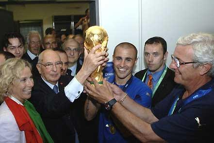

ФУТБОЛ
Футбол (англ. football, от foot – нога и ball – мяч), спортивная командная игра, цель которой – забить мяч в ворота соперника, используя индивидуальное ведение и передачи мяча партнерам ногами, головой и др. частями тела – кроме рук. В матче побеждает команда, забившая больше голов.
В настоящее время футбол – спорт номер один в мире. Наряду с различными турнирами национальных сборных во второй пол. В 20 в. большую популярность приобрели международные соревнования клубных команд. Все большее развитие получает женский футбол. Во многих странах культивируется мини-футбол, «пляжный футбол» и пр. разновидности футбола. Сейчас во всем мире регулярно играют в футбол более 240 млн. человек (примерно каждый 25-й житель Земли), функционируют 1,5 млн. команд и 300 тысяч клубов.
В некоторых странах футбол принято называть «соккером» (англ. soccer), чтобы избежать путаницы с американским футболом.
Правила
Футбольные правила в привычном для нас виде появились не сразу. Они существенно менялись не только до, но и после 1863 (дата рождения современного футбола). Это касается и таких основополагающих пунктов, как продолжительность игры, параметры мяча или количество игроков в команде (вплоть до 1880 их на поле от каждой стороны было 12).
Одно время судья располагался на трибуне и разрешал спорные моменты, если к нему обращались сами игроки. Лишь со временем рефери «вышел» на поле и обзавелся свистком. В начале 1890-х у него появились два помощника на линии.
В 1891 введен пенальти. Но соответствующая отметка в штрафной площади появилась лишь в 1903: прежде судья отмерял необходимое расстояние «на глаз».
В 1925 внесена существенная поправка в определение положения «вне игры»: чтобы игрок не оказался в оффсайде, перед ним должно быть минимум два (ранее – три) соперника. (До середины 1860-х оффсайдом считалась любая ситуация, когда игроку давали пас вперед). Это нововведение заметно сказалось на тактике игры.
Голы, забитые непосредственно с углового удара, стали засчитывать лишь с 1926 (сами угловые удары тоже были введены не сразу, а в 1872).
В 1882 создан Международный Совет футбольных ассоциаций, в который входят ассоциации Англии, Шотландии, Уэльса и Северной Ирландии и представители ФИФА. На ежегодных встречах Совета вносятся необходимые изменения и уточнения в футбольные правила, в настоящее время состоящие из 17 пунктов.
В матчах с участием команд женщин, инвалидов и спортсменов моложе 16 или старше 35 лет допускаются отклонения от общепринятых стандартов, касающиеся размеров поля и ворот, параметров мяча, продолжительности игры и максимального количества замен.